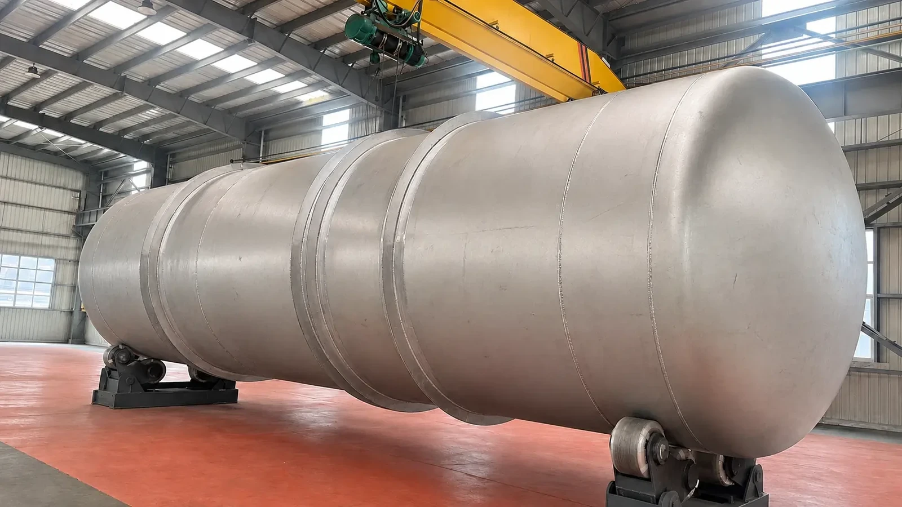

Pressure vessels represent one of the most demanding categories of industrial fabrication, where engineering precision directly impacts operational safety. At MEEM, we bring the same rigorous standards applied to HRSG and ACHE manufacturing to our custom pressure vessel line.
Every vessel we produce is designed, fabricated, tested, and documented in full accordance with applicable ASME code sections and customer specifications. From small process vessels to large-scale reactor components, our capabilities span the full spectrum of pressure-containing equipment.

Separators, scrubbers, flash drums, surge vessels, and accumulators for chemical processing, refining, and upstream oil & gas applications. Designed for specific process conditions with appropriate internals and nozzle arrangements.
Reactor shells, reactor internals support structures, catalyst containment vessels, and high-pressure reaction chambers. Material selection ranges from carbon steel through stainless to exotic alloys for corrosive services.
LPG storage tanks, compressed gas receivers, buffer tanks, and inventory storage vessels. Horizontal and vertical orientations with full structural analysis for seismic and wind loading conditions.
Pressure vessels supporting power generation and industrial facility operations including water treatment vessels, HVAC system components, and auxiliary process containers manufactured to stringent quality standards.
Shell-and-tube exchanger shells (stationary head, floating head, rear head types), channel boxes, bonnets, and tube sheet assemblies — complementing our core heat exchanger product lines with pressure-boundary components.
Unique or non-standard pressure-containing equipment designed to meet specialized project requirements. Our engineering team works closely with clients from concept through delivery to ensure optimal solutions.
Submit Your SpecificationA: MEEM manufactures process vessels, reactor vessels and components, storage vessels, auxiliary process vessels, and heat exchanger shells and pressure parts.
A: MEEM designs and fabricates pressure vessels in accordance with ASME Section VIII Division 1 and Division 2, and can meet PED 2014/68/EU requirements for CE marking.
A: MEEM holds ASME U Stamp for pressure vessels and ASME PP Stamp for pressure piping.
A: MEEM works with carbon steel, low-alloy steel, stainless steel, clad and overlay materials and nickel alloys such as Inconel and Hastelloy on a project-specific basis.
A: MEEM pressure vessels serve petrochemical, power generation, oil and gas, industrial processing, water treatment and HVAC applications.